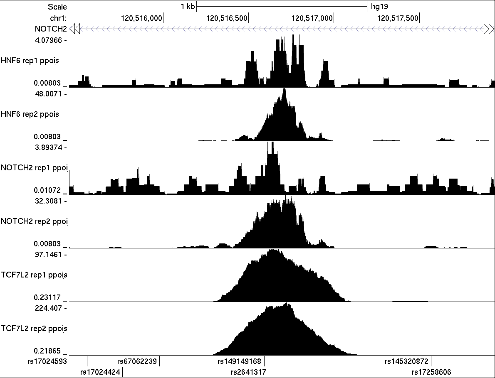
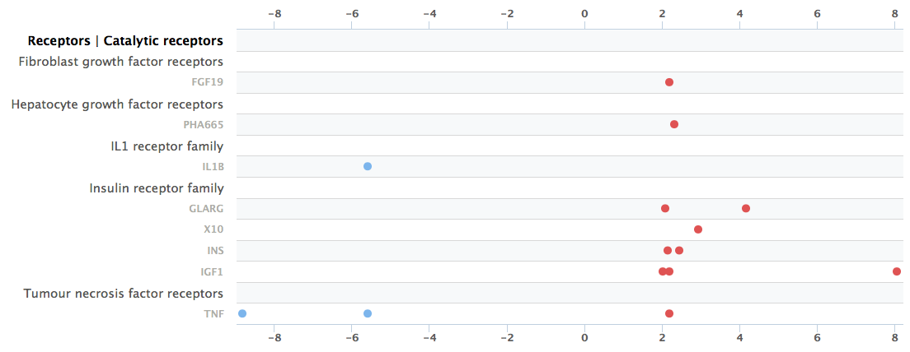

class: center, middle, inverse # Status updates on TF binding studies --- .left-column[ ## _NOTCH2_ ### _NOTCH2_ and T2D ] .right-column[ ## _NOTCH2_ and T2D T2D risk at the _NOTCH2_ locus is colocalized with _NOTCH2_ expression in liver. Note rs2641317 (teal). .center[<img src="figure/notch2-ENSG00000134250.13.pdf" alt="notch2 locus" width="500"/>] ```sh = NOTCH2 expression vs T2D =============== PP0: [ ] [ 1.0709e-14 ] PP1: [ ] [ 0.0002 ] PP2: [ ] [ 2.1401e-12 ] PP3: [ ] [ 0.0388 ] PP4: [||||||||||||||||||| ] [ 0.9610 ] ``` ] --- .left-column[ ## _NOTCH2_ ### _NOTCH2_ and T2D ### ChIP-seq (QC) ] .right-column[ ## HepG2 ChIP-seq experiments (QC) Basic QC statistics for recent ChIP-seq experiments in HepG2 cells. The number of peaks is very low in all cases. | Sample | Read Count | Duplication Rate | Peaks | | --- | --- | --- | --- | | `Input` | 30,546,140 | 3.90 % | NA | | `HNF6_rep1` | 34,660,943 | 4.65 % | 3 | | `HNF6_rep2` | 35,604,534 | 8.86 % | 18 | | `NOTCH2_rep1` | 28,381,733 | 3.98 % | 2 | | `NOTCH2_rep2` | 40,661,964 | 10.40 % | 4 | | `TCF7L2_rep1` | 5,229,889 | 17.22 % | 112 | | `TCF7L2_rep2` | 5,513,134 | 17.70 % | 120 | ] --- .left-column[ ## _NOTCH2_ ### _NOTCH2_ and T2D ### ChIP-seq (QC) ] .right-column[ ## Concordance of alignments Heatmap showing spearman correlations of coverage between HepG2 ChIP-seq datasets. The _NOTCH2_ and _HNF6_ data appear to be convoluted. <img src="figure/bin200-spearman-heatmap.pdf" alt="alignment heatmap" width="500"/> ] --- .left-column[ ## _NOTCH2_ ### _NOTCH2_ and T2D ### ChIP-seq (QC) ] .right-column[ ## Concordance of peaks <img src="figure/jaccard.pdf" alt="peak heatmap" width="500"/> ] --- .left-column[ ## _NOTCH2_ ### _NOTCH2_ and T2D ### ChIP-seq (QC) ### ChIP-seq (Outcome) ] .right-column[ ## HNF6 binding at rs2641317 Tentatively (in light of potential ChIP-seq data quality issues), there seems to be evidence for HNF6, NOTCH2, and TCF7L2 binding at rs2641317. The HNF6 peak is supported by a HNF6 motif overlapping rs2641317. .center[  ] ] --- .left-column[ ## _NOTCH2_ ### _NOTCH2_ and T2D ### ChIP-seq (QC) ### ChIP-seq (Outcome) ### Next steps ] .right-column[ ## Next steps Attempt NOTCH2 and HNF6 ChIP-seq in fresh HepG2 cells? ] --- .left-column[ ## TF lineup ### NKX6.3 ] .right-column[ ## NKX6.3 (Islet) .center[<img src="figure/nkx6-3-ENSG00000165066.pdf" alt="notch2 locus" width="550"/>] ```sh = ENSG00000165066 expression vs T2D ================== PP0: [ ] [ 1.1734569068244555e-24 ] PP1: [ ] [ 0.00018721276369790244 ] PP2: [ ] [ 2.2976966768861496e-22 ] PP3: [ ] [ 0.03569322528963497 ] PP4: [||||||||||||||||||| ] [ 0.9641195619466648 ] ``` ] --- .left-column[ ## TF lineup ### NKX6.3 ### HMG20A ] .right-column[ ## HMG20A (Islet) .center[<img src="figure/hmg20a-ENSG00000140382.pdf" alt="hmg20a locus" width="550"/>] ```sh = ENSG00000140382 expression vs T2D ================== PP0: [ ] [ 5.118990495130333e-29 ] PP1: [ ] [ 6.184277067340166e-06 ] PP2: [ ] [ 1.8590624773346748e-25 ] PP3: [ ] [ 0.02148091040533401 ] PP4: [||||||||||||||||||| ] [ 0.9785129053175947 ] ``` ] --- .left-column[ ## TF lineup ### NKX6.3 ### HMG20A ### JAZF1 ] .right-column[ ## JAZF1 (Adipose / <span class="inactive">Skeletal Muscle</span>) .center[<img src="figure/jazf1-visceral-ENSG00000153814.7.pdf" alt="jazf1 locus" width="550"/>] ] --- .left-column[ ## TF lineup ### NKX6.3 ### HMG20A ### JAZF1 ] .right-column[ ## JAZF1 (<span class="inactive">Adipose</span> / Skeletal Muscle) .center[<img src="figure/jazf1-mus-sklt-ENSG00000153814.7.pdf" alt="jazf1 locus" width="550"/>] ] --- .left-column[ ## TF lineup ### NKX6.3 ### HMG20A ### JAZF1 ] .right-column[ ## JAZF1 (Adipose / Skeletal Muscle) A Signaling Pathways Project (SPP) query returns studies indicating that JAZF1 expression in breast cancer cell lines is increased when those cells are treated with insulin or related molecules. .center[] > Looking at the JAZF1 fine-mapping: * The most probable variant rs1513272 is in a muscle enhancer and disrupts USF2, which is an insulin responsive factor. * The second most probable is rs849135 which is in a weak adipose enhancer. ]